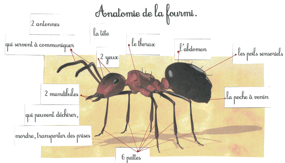
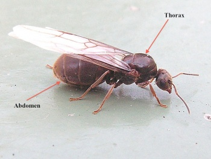
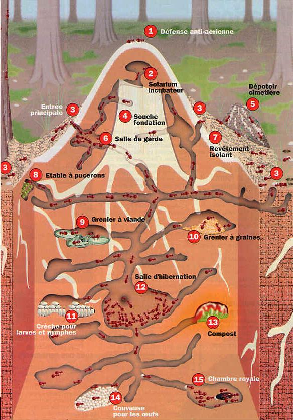
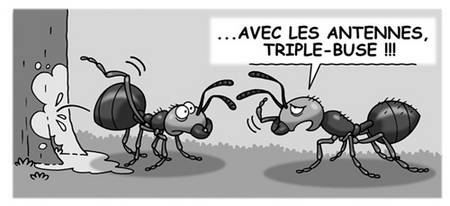
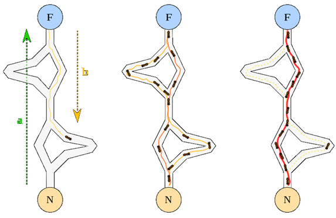

Anatomie de la fourmi

Que mange les fourmis ?
Les fourmis en général se nourrissent :
- de feuilles
- de fruits
- d'aliment sucrés
- de pucerons et pleins d'autres petits insectes
mais a quoi ressemble
la reine des fourmis ?

La reine des fourmis est plus grosse que ses ouvrières et elle a des ailes.
Où ont-elles colonisées ?
- Toutes les régions terrestre
- Sauf le Groenland et l'Antartique
Où habitent les fourmis ?

Comment communiquent les fourmis ?
En utilisant des phéromones qu'elles laissent sur leurs chemins avec leurs antennes.

A quoi servent les phéromones ?
